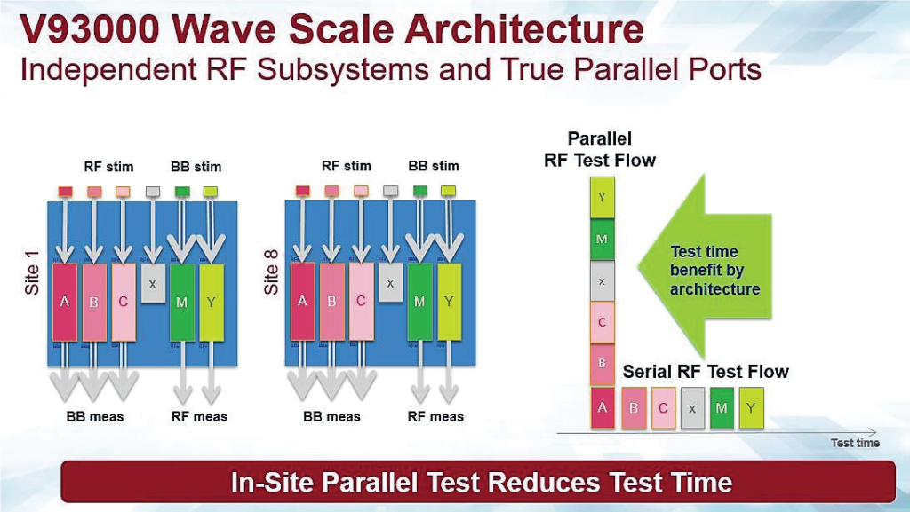

By Judy Davies, VP, Global Marketing Communications, Advantest Corp.
The many connected tasks we perform every day using advanced mobile products, such as smartphones, tablets and notebooks, are enabled by a somewhat dizzying array of wireless standards. These range from Long Term Evolution (LTE), LTE-Advanced, LTE-A Pro and LTE-M smartphone standards, to ZigBee, Bluetooth, GPS and Wireless Local Area Network (WLAN). The requirements and performance criteria for these wireless technologies differ according to their application – many of which revolve around the Internet of Things (IoT) – creating a host of technological challenges, including those surrounding packaging and test.
Before they’re packaged, assembled and shipped, RF-based system-on-chip (SoC) devices built on the current Third-Generation (3G) and Fourth-Generation (4G) LTE broadband standards are fully tested and characterized, as are both the RF and analog baseband transceivers employed in these applications. In addition, the Fifth-Generation (5G) standard is forthcoming, with its promise of new speed and capacity levels, lower latency and greater flexibility than LTE, but its new encoding technologies and chip structures will require new production, packaging and test technologies. The anticipated needs of next-generation wireless networks are in fact shaping the next generation of RF test equipment.
The proliferation of advanced packaging methodologies – e.g., fan-out wafer-level packaging (FOWLP), multichip packages (MCPs), through-silicon vias (TSVs), embedded passives and actives, and systems-in-package (SIPs) – also plays a key role in growing RF test requirements. While it’s not clear which of these package types will dominate going forward, they are all impacting how steps such as wafer sort, final test, packaging test, burn-in and others are performed.
Packaging integration is key
With respect to packaging for RF transceivers, as well as for RF chips in general, every RF device comprises a large number of passive components, such as capacitors and inductors, allowing its use as an end product. Therefore, packaging integration is essential to turning RF silicon into a device that can easily communicate with the antenna in the RF space. The three primary components of integrated packages are as follows:
- Embedded passive devices – embedded passives are essential to making useful RF end products based on RF chips, and they are a key value-add provided by outsourced semiconductor and test (OSAT) houses.
- Multiple standards – many standards are integrated into today’s mobile phone, so it’s critical to implement an RF set that can handle these various standards. Multi-purpose RF devices switch modes when the user switches location, which makes them more both complex and more challenging to test.
- Multiple antennas – essential to ensuring that a device will work no matter how it is held by the user, multiple antennas are increasingly being employed within wireless products.
OSATs are competing with each other to unify all of these components into a viable RF package. Flexible, scalable automated test equipment (ATE) is a fundamental requirement for thorough testing of these devices. This includes both early die sort and final test once the peripherals and passives are attached within the integrated package. Regardless of the packaging technique, more rigorous functional test and more robust compliance test are essential – highlighting the importance of precision, capability and bandwidth in new equipment. Combining a tester-per-pin architecture – such as the Advantest V93000 platform – with massive parallelism is one approach to ensuring the high performance and high utilization chipmakers need to get their products to market more quickly, and at a lower test cost.
Lessons of evolution
Much discussion is under way with respect to how packaging impacts the way test cards are developed – similar to what happened with printed circuit boards (PCBs) a decade or so ago. Back then, board test was big business. Virtually every electronics company created its own PCBs, using its own components, and put them into widely available electronic products. Since then, the PCB chain has consolidated, with a small number of very large subcontract manufacturers putting out PCB assemblies.
Package integration also faces a similar major change – more and more technology is being integrated into a single piece of silicon. PCBs are becoming smaller and smaller, or being eliminated entirely, as in products like the Apple Watch. As this industry shift continues to evolve, the line between chip and package is blurring – particularly with more intelligence being put into the package (which was once merely a “dumb” housing for the circuitry). Competition for business between PCB load and assembly houses and OSATs is also on the rise. What will be chosen depends on whether the customer needs one-stop shopping, which OSATs claim they can provide, or if they’d prefer to tap more traditional PCB load/assembly providers for the board.
A clear winner in this space is chip-scale packaging—particularly, wafer-level chip scale packaging (WLP). The majority of the building blocks in today’s smartphones are WLPs. Eliminating the classic substrate and consolidating the flow of material into wafer-level scale allows two goals to be addressed in one step: miniaturization (making the package ultra-thin) and cost scaling—a key requirement for high-volume manufacturing.
Reducing costs through parallelism
Signal transmission and reception in 5G systems will also impact future test equipment requirements, which are further complicated by the projected billions of IoT devices with different types of sensors using low-power wireless links to connect to the internet. These sensors will be located all around us, letting us access, interact with and control our environment no matter where we are – at home, at work or in transit.
Current RF testing solutions, which typically require multiple cards and a separate calibration kit, employ a fan-out architecture with shared subsystem resources. This means that devices with multiple frequency paths are actually tested in serial within the device, rather than in true parallel test mode. It also means that only one RF standard at a time can be tested per site.
One new approach is Advantest’s V93000 channel card called Wave Scale RF that omits shared resources, condensing four independent RF subsystems into one integrated card with a high degree of parallelism – up to 192 ports for parallel testing of multiple RF device types. This removes the limitations placed on test speedup, cutting test times in half, and enabling device parallelism of 16, 32 or even higher. These cards, together with the complementary Wave Scale MX (for mixed-signal) cards, can simultaneously test multiple standards or multiple paths within each RF device, achieving both in-site parallelism and high multi-site efficiency. Devices can be tested two to three times faster than with other solutions – greatly reducing the cost of test. This is a key requirement for OEMs and fabless semiconductor companies that need to quickly bring RF-enabled devices to market in high volumes.
Wave Scale MX is optimized for analog IQ baseband applications and testing of high-speed DACs and ADCs. As with Wave Scale RF, it omits shared resources, delivering parallel, independent operation of all 32 instruments controlled by a hardware sequencer. This is critical for semiconductor and telecommunications chip leaders, who face a 10x reduction from what they sell into cell phones to what they can charge in the industrial area. From a security perspective, the key challenge is that the functionality must ensure safety, while data is directed into the right channel and properly authorized – thus, the security requirement is even higher than for phone line communication.
In fact, security is one of the biggest concerns about the IoT– silicon providers will be under tremendous pressures to guarantee that their products adhere to industry reference standards. Whether these standards will be as stringent as those adopted within the automotive and aerospace industries remains to be seen, but they will most certainly need to be stronger than consumer-grade standards.
These requirements further underscore the need to rigorously and robustly qualify and test devices, as well as manufacturers’ need to ensure long-term device reliability (based on user demand). This means that the pressure to deliver high-quality devices at the lowest possible investment cost will continue to mount, requiring methodology breakthrough and further justifying the need for advanced equipment that can fully leverage these changes in the RF device landscape. With the new Wave Scale card, OEMs can address their bottom-line manufacturing and test cost pressures while ensuring a solution is in place with the flexibility and headroom to accommodate the requirements of the future.